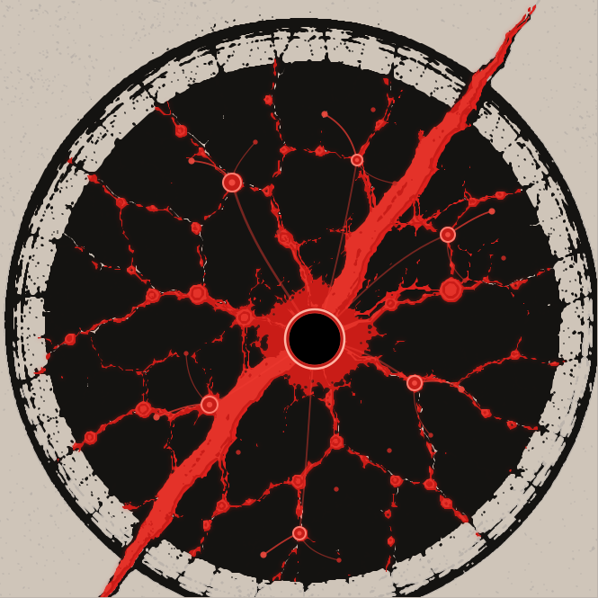

Six portes, un accès au Manifeste
Prototype technique isolé. Il affiche une copie identique du SVG vectoriel R7-B candidat, construite sur les sources R6. Les logos officiels restent inchangés. Les zones tactiles des six portes reprennent exactement les coordonnées du SVG R7-B candidat, toujours à confronter à la capture annotée originale de Zout. Le SVG montre les points tertiaires candidats et les quinze liens fonctionnels restent dans le panneau contextuel de leur porte, sans faire passer ces points dessinés pour des boutons individuels. La position exacte du point 7 dans le dessin n'est pas simulée : son contrôle fonctionnel est provisoirement présenté sous le dessin. Aucun contenu réservé n'est accessible.

Les intitulés des portes et les liens vers des pages préexistantes ne constituent ni une publication de nouvelles fiches ni une validation de leurs dossiers internes. Prototype sans dépendance réseau externe.